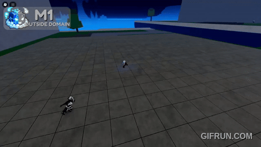
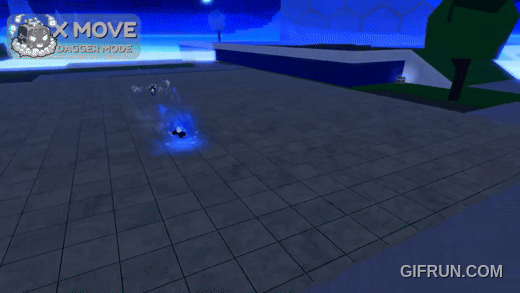

December 21, 2025
It's been 5 years since the first release of the Mythical Control Fruit, many player has been waiting for a rework of this particular fruit. The fruit it self will grant the user to manipulate anything inside a dome, which is a very unique ability compare to other fruits in the game. Now, The Control fruit got the rework it deserves. This article will overview around the update for Control fruit based on a video uploaded by the official Blox Fruit Youtube Channel.
In the first 5 minutes we get to see a lore kind of animation, showing Zioles and Uzoth fighting for the new control rework inside a laboratory on the Hot and Cold island. At the end, the one who take the fruit is a myterious guy dress in white, it seems to be the son of the scientist who develop the Control Fruit.


All of that is cool, but the main topic here is what changes have been made for the Control fruit it self. In the past, user can only use an ability when they activated the domain and get inside it. Now, user can use a version of ability without activating a domain.
They added an M1 attack for this rework, almost identical to any mythical fruit.
The X move make the user dash to a designated target and make a flashy attack to an enemy.

This C move make the user throw a dagger that spin and will catch an enemy, at the end it will turn back and pulling the enemy closer. It can also cut through certain object like tree.

F move make the user teleport to a location from the thrown dagger. It can also deal damage to an enemy.

The Z move has a major changes, from animation and a new mechanic. There are 2 modes, hand mode for controlling the battle ground and dagger mode for execution.

The M1 in dagger mode has an ability to cut building and trap player, although this technique only work on certain island like the Sea Castle.

X move make the user dash while levitating objects base from the ground and slasing an enemy with insane combo.
C move give the user an ability to throw a barrage of slashes, this move has multiple type.

M1 move create a cube to attack enemy by throwing them one by one or at the same time.

X move make the user release a shockwave that can attack enemy when hit, if miss the user will create objects that can be thrown.

C move will launch the hexagons from the domain to a designated area with great AoE.

The V move is the most powerfull one, the user will deal insane damage to any enemy inside the domain. There is also the upgraded version of this move aswell.

There is a new type of experience similar to Raid, where players team up to clear floors of enemy to get valuable accesories. To access the new Dungeon, player need to be atleast level 1100 to go to the Hub or Dungeon Realm.


Good news for all mobile player out there because the UI just got an improvement. Buttons can be set to quick cast an ability an the player view will be set as shift lock view aswell. To toggle this, just go to settings and search for "Ability Control Scheme" on the gameplay section, then switch to "Modern".


For better experience and understanding, go to :
That's all the overview of the new update!
Want more Roblox news, codes, and guides? Check out our other articles on BloxSpark for the latest updates on your favorite games!